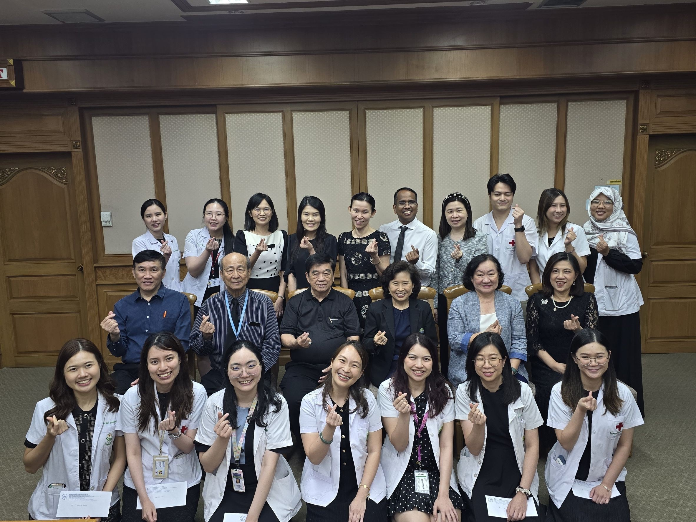

Pediatric Infectious Disease Division
Department of Pediatrics, Faculty of Medicine Chiang Mai University
Department of Pediatrics, Faculty of Medicine Chiang Mai University

สาขาวิชาโรคติดเชื้อ ภาควิชากุมารเวชศาสตร์
คณะแพทยศาสตร์ มหาวิทยาลัยเชียงใหม่

สาขาวิชาโรคติดเชื้อ ภาควิชากุมารเวชศาสตร์
คณะแพทยศาสตร์ มหาวิทยาลัยเชียงใหม่

สาขาวิชาโรคติดเชื้อ ภาควิชากุมารเวชศาสตร์
คณะแพทยศาสตร์ มหาวิทยาลัยเชียงใหม่

สาขาวิชาโรคติดเชื้อ ภาควิชากุมารเวชศาสตร์
คณะแพทยศาสตร์ มหาวิทยาลัยเชียงใหม่
หน่วยสาขาโรคติดเชื้อ ภาควิชากุมารเวชศาสตร์ คณะแพทยศาสตร์ มหาวิทยาลัยเชียงใหม่ เป็นหน่วยงานที่มุ่งเน้นการดูแลรักษา ป้องกัน และควบคุมโรคติดเชื้อในเด็กอย่างครบวงจร โดยให้บริการทางการแพทย์ที่มีคุณภาพสูง ครอบคลุมทั้งผู้ป่วยนอกและผู้ป่วยใน ด้วยทีมกุมารแพทย์ผู้เชี่ยวชาญเฉพาะทางด้านโรคติดเชื้อ ร่วมกับบุคลากรสหสาขาวิชาชีพที่มีประสบการณ์หน่วยโรคติดเชื้อ มีบทบาทสำคัญในการวินิจฉัยและรักษาโรคติดเชื้อที่ซับซ้อนในเด็ก เช่น การติดเชื้อในกระแสเลือดโรคติดเชื้อไวรัสแบคทีเรียเชื้อรารวมถึงโรคติดเชื้ออุบัติใหม่และอุบัติซ้ำโดยยึดหลักการรักษาที่อิงตามหลักฐานเชิงประจักษ์และมาตรฐานสากล นอกจากการให้บริการทางคลินิก หน่วยสาขาโรคติดเชื้อยังมีพันธกิจด้านการเรียนการสอนสำหรับนักศึกษาแพทย์ แพทย์ประจำบ้านกุมารเวชศาสตร์ และแพทย์ประจำบ้านต่อยอดสาขาโรคติดเชื้อ เพื่อพัฒนาศักยภาพบุคลากรทางการแพทย์ให้มีความรู้ ความสามารถ และทักษะที่ทันสมัย อีกทั้งยังส่งเสริมงานวิจัยด้านโรคติดเชื้อในเด็ก เพื่อสร้างองค์ความรู้ใหม่และพัฒนาระบบการดูแลผู้ป่วยอย่างต่อเนื่องหน่วยสาขาวิชาโรคติดเชื้อ มุ่งมั่นที่จะเป็นศูนย์กลางความเป็นเลิศด้านโรคติดเชื้อในเด็กของภาคเหนือ และเป็นแหล่งส่งเสริมทางวิชาการที่มีคุณภาพในระดับประเทศและนานาชาติ พร้อมทั้งให้ความสำคัญกับการป้องกันโรค การให้วัคซีน และการสร้างความตระหนักรู้แก่ประชาชน เพื่อยกระดับสุขภาพเด็กไทยอย่างยั่งยื่น The Pediatric Infectious Disease Division, Department of Pediatrics, Faculty of Medicine, Chiang Mai University, is dedicated to providing comprehensive care, prevention, and control of infectious diseases in children. We deliver high-quality inpatient and outpatient medical services led by a multidisciplinary team of experienced pediatric infectious disease specialists. Our division plays a crucial role in diagnosing and managing complex pediatric infections, including bloodstream infections, viral, bacterial, and fungal infections, as well as emerging and re-emerging diseases—all guided by evidence-based medicine and international clinical standards. Beyond clinical care, we are committed to medical education for medical students, pediatric residents, and pediatric infectious disease fellows, enhancing their clinical competence with up-to-date knowledge and skills. Furthermore, we drive pediatric infectious disease research to foster scientific innovation and continuously improve patient care systems. Aiming to be the regional center of excellence for pediatric infectious diseases in Northern Thailand, our division serves as an academic bridge nationally and internationally. We also place strong emphasis on disease prevention, immunization, and public health awareness to sustainably improve the health and well-being of Thai children.
ทุกวันจันทร์ 8.30–12.00น.ที่ ห้องตรวจพิเศษเด็ก 1 ชั้น 6 อาคารศรีพัฒน์ ยกเว้นวันหยุดราชการ
Hours: Every Monday, 8:30 AM – 12:00 PM
Location: Special Outpatient Clinic 1 (OPD 27),
6th Floor, Sriphat Building
(Closed on official public holidays)
ผู้ป่วยในหอผู้ป่วยเด็กที่เป็นโรคติดเชื้อต่างๆ ดูแลผู้ป่วยที่ได้รับการวินิจฉัยด้วยโรค ทางการติดเชื้อเพื่อประเมินการเปลี่ยนแปลงต่างๆทุกวัน Provides comprehensive medical care for pediatric inpatients with infectious diseases, including regular daily clinical evaluations and specialized management for confirmed cases.
เกี่ยวกับโรคติดเชื้อ เอชไอวี และวัณโรค รวมถึงคำแนะนำการใช้ยาต้านไวรัส การดูแลผู้ป่วย การปฏิบัติตัวอย่างเหมาะสม และการสนับสนุนด้านจิตสังคมแก่ผู้ป่วยและครอบครัว Provides comprehensive medical care for pediatric inpatients with infectious diseases, including regular daily clinical evaluations and specialized management for confirmed cases.


แพทย์ประจำบ้านต่อยอด (Fellow) สาขาโรคติดเชื้อ ชั้นปีที่ 2 ภาควิชากุมารเวชศาสตร์ คณะแพทยศาสตร์ มหาวิทยาลัยเชียงใหม่ 2nd-Year Pediatric Infectious Disease Fellow, Department of Pediatrics, Faculty of Medicine, Chiang Mai University
ในโอกาสได้รับรางวัลชนะเลิศอันดับที่ 1 การนำเสนอผลงานวิจัยด้วยวาจา (Oral Presentation) for winning 1st Place in Oral Research Presentation.
➤ Read more
แพทย์ประจำบ้านสาขากุมารเวชศาสตร์ ชั้นปีที่ 3 ได้รับคัดเลือกให้เป็นตัวแทนของภาควิชากุมารเวชศาสตร์ คณะแพทยศาสตร์ มหาวิทยาลัยเชียงใหม่ 3rd-Year Pediatric Resident, for being selected to represent the Department of Pediatrics, Faculty of Medicine, Chiang Mai University
นำเสนอผลงานวิจัยด้วยวาจา (Oral presentation) in delivering an Oral Research Presentation
➤ Read more
แพทย์ประจำบ้านต่อยอด (Fellow) สาขาโรคติดเชื้อ ชั้นปีที่ 2 ภาควิชากุมารเวชศาสตร์ คณะแพทยศาสตร์ มหาวิทยาลัยเชียงใหม่ 2nd-Year Pediatric Infectious Disease Fellow, Department of Pediatrics, Faculty of Medicine, Chiang Mai University
ได้เดินทางไปศึกษาดูงาน (Observership program) ณ Perth Children's Hospital ประเทศออสเตรเลีย เมื่อเดือนมีนาคม 2569 completed a clinical observership program at Perth Children’s Hospital, Australia, in March 2026
➤ Read more
เนื่องในโอกาสสำเร็จการศึกษาเฉพาะทางต่อยอด สาขาโรคติดเชื้อความรู้ ความสามารถ และความทุ่มเทในการดูแลผู้ป่วยตลอดระยะเวลาการฝึกอบรม On successfully completing fellowship training in Pediatric Infectious Diseases. We commend her dedication, expertise, and outstanding patient care throughout her training
➤ Read moreโดยการประชุมจัดในรูปแบบ online ในวันเสาร์ที่ 15 สิงหาคม 2569 เวลา 08.50-16.00 น. Format: Online Conference. Date: Saturday, August 15, 2026. Time: 08:50 AM – 04:00 PM (ICT)
➤ Read more
สาขาวิชาโรคติดเชื้อ ภาควิชากุมารเวชศาสตร์ คณะแพทยศาสตร์ มหาวิทยาลัยเชียงใหม่ Division of Pediatric Infectious Diseases, Department of Pediatrics, Faculty of Medicine, Chiang Mai University
➤ Click to learn more about us
สาขาวิชาโรคติดเชื้อ ภาควิชากุมารเวชศาสตร์
คณะแพทยศาสตร์ มหาวิทยาลัยเชียงใหม่
Division of Pediatric Infectious Diseases
Department of Pediatrics, Faculty of Medicine, Chiang Mai University
อาคาร บุญสมมาติน ชั้น 6 110 ถ.อินทวโรรส
ต.ศรีภูมิ อ.เมือง จ.เชียงใหม่ 50200
6th Floor, Bunyasammatin Building, 110 Inthawaroros Rd.,
Si Phum, Mueang Chiang Mai District, Chiang Mai 50200, Thailand
โทรศัพท์/โทรสาร +66 53 936 470 Tel / Fax: +66 53 936 470
ผู้เข้าชมเว็บไซต์ : คน